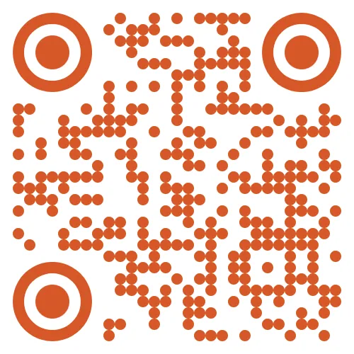

{kind=link}

{kind=link}
- AI V2.0 Ti. Premill milling page(①)를 선택한 후, 우측 화살표 버튼(②)을 클릭하여 페이지로 진입합니다.
{kind=link}
- hyperDENT의 Fixture 폴더가 네트워크 공유로 연결되어 있는 경우, 네트워크 연결 상태를 확인합니다. (①)
{kind=link}
- 가공할 Ti. 프리밀 블럭의 길이를 측정합니다.
{kind=link}
- 측정한 길이를 입력합니다. (②)
{kind=link}
- #1 ~ #10 슬롯 중, Ti. 프리밀 블럭을 장착할 슬롯을 클릭하여 선택합니다.
이 매뉴얼에서는 #2, #3번 슬롯에 장착하였습니다.
{kind=link}
- 리버스 지그에 적절한 토크(0.3~0.4N•m) 체결된 Ti. 프리밀 블럭을 선택한 슬롯에 맞춰 장착합니다.
{kind=link}
- “AI Calibration” 버튼을 클릭하여 AI Premill calibration V2.0을 시작합니다.
{kind=link}
- 입력한 Ti. 프리밀 블럭의 길이를 다시 확인합니다.
맞으면 “OK”버튼을 클릭하여 Calibration 측정을 시작합니다.
{kind=link}
- 화면의 지시에 따라, 캘리브레이션 핀(A4.0C)을 콜렛에 장착합니다.
- “Next” 버튼을 클릭하여, 다음 과정으로 진행합니다.
{kind=link}
- 프리밀 지그, Ti. 프리밀 블럭, 캘리브레이션 핀 및 주변에 액체, 이물질 등이 없도록 청소합니다.
- 통전 상태를 확인하기 위하여, “Checking for cleaning” 버튼 1회 클릭합니다.
{kind=link}
{kind=link}
- 통전선으로 캘리브레이션 핀과 프리밀 지그 및 Ti. 프리밀 블럭을 연결하여 전류가 흐르는지 확인합니다.
정상적으로 전류가 통전되면 접촉 시 “Touch On “ 버튼에 노란LED가 켜집니다.
{kind=link}
- 정상적으로 통전되는 것을 확인했다면, “Start Calibration” 버튼을 클릭하여 캘리브레이션을 시작합니다.
{kind=link}
- 프리밀 환봉의 길이를 한번 더 확인 하고, “OK” 버튼을 클릭하면 캘리브레이션 측정을 시작합니다.
{kind=link}
{kind=link}
{kind=link}
- 정상적으로 캘리브레이션 측정이 완료되었습니다.
Fixture 파일(*.fmdf) 이 [D:\00 - M AI_HyperDent_fmdf] 에 저장됩니다.
hyperDENT Fixture 폴더가 네트워크로 공유되고 있는 경우, 결과 파일(픽스처 파일)은 해당 폴더에 자동으로 저장됩니다.
- “OK” 버튼을 클릭합니다.
{kind=link}
- “Save work offset”을 클릭하여 “Work Offsets” 창을 엽니다.
{kind=link}
- “Save” 버튼을 클릭하여 결과값을 저장합니다.
- “Close” 버튼을 클릭하여 “Work Offsets” 창을 닫습니다.
- “Next page” 버튼을 클릭하여 다음 단계로 진행합니다.
{kind=link}
- 화면의 지시에 따라, 캘리브레이션 핀(A4.0C)을 콜렛에서 제거합니다.
- “Next page” 버튼을 클릭하여 다음 단계로 진행합니다.
{kind=link}
(hyperDENT Fixture 폴더가 네트워크 공유로 연결되어 있지 않은 경우)
- USB 저장 장치를 장착한고, 장비의 PC에서 아래 경로로 이동합니다.
[D:\00 - M AI_HyperDent_fmdf]
{kind=link}
(hyperDENT Fixture 폴더가 네트워크 공유로 연결되어 있지 않은 경우)
- 캘리브레이션의 결과로 생성된 Fixture 파일을 USB에 복사 하십시오.
{kind=link}
(hyperDENT Fixture 폴더가 네트워크 공유로 연결되어 있지 않은 경우)
- USB로 복사한 fmdf 파일을 하이퍼덴트 Fixture 폴더로 붙여넣기 합니다.
{kind=link}
- hyperDENT를 실행하고, 복사된 Fixture를 선택합니다.
{kind=link}
#2, #3번 슬롯만 캘리브레이션을 진행했기 때문에, 이미지와 같이 해당 슬롯만 활성화 되어 있습니다.